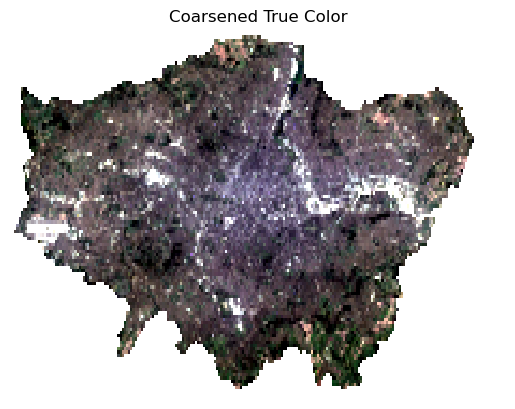
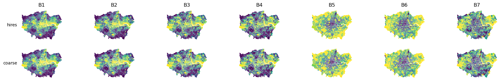

%matplotlib inline
import numpy as np
import pandas
import geopandas
import xarray as xr
import regionmask
import matplotlib.pyplot as pltERROR 1: PROJ: proj_create_from_database: Open of /opt/conda/envs/gds/share/proj failedThis notebook derives per-LSOA spectral features from a Landsat 8 surface-reflectance scene (2019-08-26, London extent).
We work with two inputs: a multi-band NetCDF raster derived from Landsat 8 and the London LSOA polygon boundaries (2020 definition) used throughout the workshop.
%matplotlib inline
import numpy as np
import pandas
import geopandas
import xarray as xr
import regionmask
import matplotlib.pyplot as pltERROR 1: PROJ: proj_create_from_database: Open of /opt/conda/envs/gds/share/proj failedlondon_landsat.nc contains surface reflectance for bands B1–B7 of Landsat 8, reprojected to EPSG:4326. We use the scipy engine because the standard netCDF4 C extension is not available in the WASM kernel.
sr = xr.open_dataset('london_landsat.nc', engine='scipy')['SR']
sr<xarray.DataArray 'SR' (band: 7, y: 1141, x: 2314)> Size: 148MB
[18481918 values with dtype=float64]
Coordinates:
* band (band) object 56B 'B1' 'B2' 'B3' 'B4' 'B5' 'B6' 'B7'
* y (y) float64 9kB 51.7 51.7 51.7 51.7 ... 51.28 51.28 51.28 51.27
* x (x) float64 19kB -0.5196 -0.5192 -0.5189 ... 0.3434 0.3438 0.3441
Attributes:
AREA_OR_POINT: AreaWe reuse the geometry column from the embeddings GeoJSON, which already carries the 2020 LSOA definitions for London.
lsoa = geopandas.read_file('uk_lsoa_london_embeds_2020.geojson')[['LSOA21CD', 'geometry']]
We want one row per LSOA with the mean surface reflectance for each of the 7 bands — a 7-feature vector per area.
Computing this at full resolution (~30 m pixels, 1504 × 1943 grid) is memory-intensive in the browser. We use two approaches:
landsat_features.csv, computed offline at full resolution and bundled with the workshopCoarsening by 8× reduces the grid from 1504 × 1943 to ~188 × 243 pixels (~240 m resolution), which is still well within LSOA size (~500 m across) and runs in seconds in the browser.
sr_coarse = sr.coarsen(x=10, y=10, boundary='trim').mean()Display coarsened:
rgb_c = sr_coarse.sel(band=['B4', 'B3', 'B2'])
lo_c = rgb_c.quantile(0.02, dim=['x', 'y'])
hi_c = rgb_c.quantile(0.98, dim=['x', 'y'])
ax = (
((rgb_c - lo_c) / (hi_c - lo_c))
.clip(0, 1)
.plot.imshow()
)
ax.axes.set_axis_off()
ax.axes.set_title('Coarsened True Color')
plt.show()
Create a mask from the polygons:
mask = regionmask.mask_geopandas(
lsoa.reset_index(), lon_or_obj=sr_coarse.x, lat=sr_coarse.y, numbers='index'
)Obtain mean values for each band by grouping by polygon and store as a DataFrame:
lookup = xr.DataArray(lsoa['LSOA21CD'], dims='mask')
lsoa_bands = sr_coarse.groupby(mask).mean()
coarse_features = (
lsoa_bands
.transpose('mask', 'band')
.assign_coords(LSOA21CD=lookup.sel(mask=lsoa_bands['mask']))
.swap_dims({'mask': 'LSOA21CD'})
.to_pandas()
.rename(columns=lambda c: f"{c.replace('B', 'band_')}_mean")
)landsat_features.csv was computed offline at full ~30m resolution1.
hires_features = pandas.read_csv('landsat_features.csv', index_col='LSOA21CD')We can compare the pattern for each band across both resolutions to explore potential loss of information with the coarsening:
f, axs = plt.subplots(2, len(lsoa_bands["band"]), figsize=(21, 3))
for i, (label, version) in enumerate(zip(["hires", "coarse"], [hires_features, coarse_features])):
for j, band in enumerate(lsoa_bands["band"]):
ax = axs[i, j]
col = f"{str(band.data).replace("B", "band_")}_mean"
(
lsoa
.join(version, on="LSOA21CD")
.plot(column=col, scheme="quantiles", k=10, ax=ax)
)
ax.set_axis_off()
if i == 0:
ax.set_title(str(band.data))
if j == 0:
ax.text(-0.05, 0.5, label, transform=ax.transAxes, ha="right", va="center")
plt.show()